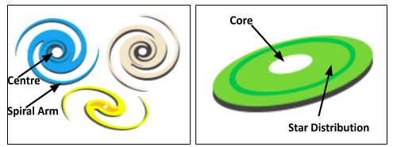
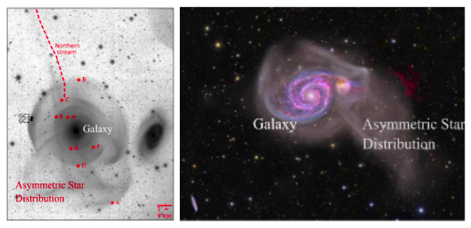
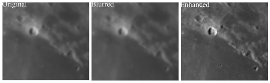
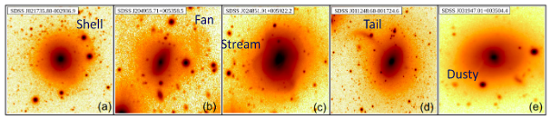
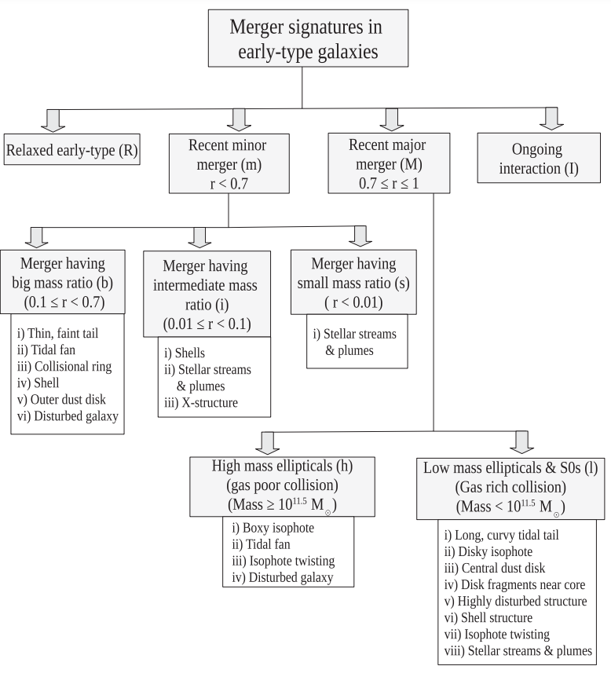

Collisions between galaxies: A frequent phenomenon than we expected earlier
Initially, early-type galaxies were considered aged, evolved systems with a reddish appearance, primarily comprising older stars and lacking young star formation due to limited gas and dust resources. However, contemporary techniques, such as integral field spectroscopy for studying star motion within galaxies and advanced telescopes with heightened sensitivity, have brought forth surprising discoveries. These discoveries have unveiled significant reservoirs of gas and dust, as well as intricate stellar structures hidden beneath the seemingly uniform distribution of stars in many of these galaxies. This article explores the potential origins of these intriguing phenomena occurring on a galactic scale.
A galaxy constitutes a collection of stars, often numbering in the hundreds of billions, accompanied by gases such as hydrogen, helium, heavier dust particles, and a minor proportion of super-heated plasma matter generated by cosmic phenomena. Using observation from different telescopes, we explore these constituents to understand their origins, spatial organization, and how galaxies transform over billions of years. Every galaxy also possesses an exotic substance called dark matter. This enigmatic matter doesn’t engage with light, yet we understood its existence as they impart gravitational force (very important for the galaxy to remain gravitationally bound). With modern optical telescope technology, we can observe galaxies in different colour filters such as green or red. This essentially enables us to see the distribution of galaxy light arising from arrangements of different types of stars, since different stars emit more in different colours.
The concept of galaxies arose in 1926, when Hubble made a groundbreaking discovery that there are entities beyond our home, the Milky Way. These turned out to be other galaxies scattered across the immense cosmos. Hubble’s close examination of these galaxies led to the identification of two primary types: (a) Spiral galaxies, characterized by arms resembling spiral shapes, and (b) Elliptical galaxies, whose arrangement of stars results in an ellipsoidal shape.

Fig. 1: The picture on the left is a cartoon of a spiral galaxy. Its centre is whitened to highlight the region, and has arms that spiral outward, creating the galaxy's spiral shape. The image shows different varieties of spiral structures that are actually observed in the cosmos. On the right, there's a drawing of an elliptical galaxy. The white part in the centre is the core, and the stars in this galaxy are spread out in a shape like a stretched circle, which is known as an ellipse. These galaxies are actually 3D structures, but when we observe them in the sky, they appear to be projected 2D images (as presented). [Credit: NASA Science ]
In Fig. 1, such galaxies have been demonstrated via a schematic diagram. In this article, only early-type galaxies, which constitute elliptical galaxies and S0 galaxies will be in focus. S0 galaxies are a transition phase between an elliptical and a spiral.
Early-type galaxies were initially considered to be older, evolved galaxies with a reddish appearance. They are mainly composed of older stars and lack young star formation due to their limited gas and dust content, which are necessary components needed to trigger the formation of stars.
Modern techniques like integral field spectroscopy (used to determine star motion within galaxies), and advanced sensitive telescopes have uncovered surprising findings. They show that there is a significant amount of gas and dust, along with complex stellar structures, hidden beneath the apparent uniform distribution of stars in many of these galaxies. This suggests that such galaxies are not merely old and static entities drifting in space; rather, they possess vibrant and dynamic structures that undergo continuous evolution. In-depth examinations of these complex structures over the course of around five decades have unveiled their origin as a result of collisions or mergers between galaxies (Fig. 2).
This silent collision process usually takes over a billion years to reach completion; this time is of course lesser than the age of the universe (current estimated age is 13.7 billion years). Detecting these underlying complex structures remains difficult due to the fact that their typical intensity is nearly 10% of the entire galaxy’s intensity. Hence, this remains a hazy topic of galaxy evolution research. Gaining insight into the process by which early-type galaxies transform into their present form through collision of galaxies, particularly within the local universe, remains a puzzle to astrophysicists.

Fig. 2: Real images of galaxies that are currently undergoing collision, forming asymmetric star distribution around the bigger galaxy. These galaxies are identified as NGC 474 (left) and M 51 (right). [Credit: Bilek.2022 (left) and Astrobin (right)]
In order to gain a better understanding of the impact of galaxy collisions on the evolution of early-type galaxies, a research team from India, with myself as the lead author, along with Sudhanshu Barway (Scientist at the Indian Institute of Astrophysics) and Somak Raychaudhury (currently Vice Chancellor at Ashoka University), conducted a study. This study involved gathering deep-exposure optical (in the red filter) images of local early-type galaxies (within roughly 600 Mega-light years of us), and then utilizing advanced techniques to identify any indications of recent merger activity through the presence of such sophisticated structures. The galaxy images were gathered using an optical telescope situated in a desert area in New Mexico, known as the ‘Sloan Digital Sky Survey’. This project’s motivation was to create a detailed map of galaxies in that region of the sky through long exposure, achieved by combining multiple scans of the same sky region and subsequently stacking them together.
Despite the remarkable capability of these deep exposure galaxy images to reach an incredibly low surface brightness limit of 28.5 magnitudes per square arcsecond, allowing us to spot objects that are an astounding 20.7 quadrillion times fainter than the Moon, there’s still a need for specialized image processing. It helps in revealing merger structures with even fainter intensity, extracting hidden richness from these remarkably faint images. These methods are known as ‘Unsharp Masking’ and ‘Model Subtraction’ in the scientific terms. In a naive language, they do the following: they create a slightly blurred version of the galaxy image and then subtract it from the original one. This helps bring out less intense features in the image, particularly those with weaker intensity. Think of it like a trick photographers use to make pictures pop by boosting contrast, a technique that is quite familiar to photographers for enhancing image quality (see Fig. 3).

Fig. 3: The left picture displays a section of the Moon captured using a 12-inch telescope. In the middle, the same image is shown after undergoing a blurring process. The blurred image is subtracted from the original, resulting in a residual image in the right. This final image exhibits enhanced contrast, helping in identifying a greater number of structures on the Moon's surface. [Credit: Ohio-state.edu ]
Upon utilizing the techniques mentioned above on our galaxy images, a rather unexpected discovery unfolded. We found that a significant number, nearly 85%, of the early-type galaxies within our sample of 202 exhibited merger structures. This figure appears to be higher than the findings from various past studies, indicating the significance of conducting such investigations with deep exposure images. Most importantly, when we combine what we have observed with predictions from computer simulations designed to understand how galaxies evolve, we expect this percentage to increase even more. This leads us to the conclusion that most, if not all, early-type galaxies in our nearby universe are constantly changing as they interact, collide, merge, and accrete other nearby galaxies.
Thereafter, our attention shifted towards examining the morphology of merger structures – essentially, how they appear in terms of their size and shape. We aimed to determine if each of these geometries could provide us with specific story about the past processes of galaxy assembly. Even though the structures looked non-linear, their shapes are unique, which allowed us to classify 11 types of merger debris around the early-type galaxies. These shapes include geometries like tails, shells, disks, boxes, thin threads, rings, dusty formations, and even complex structures that don’t fit into any specific category (see Fig. 4 for some of the examples).

Fig. 4: A collection of galaxy images displays discovered merger remnants, showcasing shapes such as a shell (a), a fan-type extension (b), a stream of stars (c), a stellar tail (d), and the presence of dusty in the galaxy (e). These are a few selected examples in which the merger structures are notably bright and can be identified in the original galaxy image. This presentation serves to showcase the complex geometry of these merger structures. For sharper merger features follow our paper: MNRAS_520.5870.
This study aimed to do more than just identify merger structures and determine their availability in our nearby universe. We additionally planned to categorize these merger structures into different groups. This approach would help us gain a clearer understanding of their likely formation history solely by analysing their shapes. After four years of determined effort, we have successfully developed a classification system for such structures (Fig. 5). The classification is divided into four main categories based on the mass ratios of colliding galaxies in a collision event: recent minor mergers (mass ratio ≤ 10:7), recent major mergers (mass ratio > 10:7), relaxed galaxies (evolving passively without recent mergers), and galaxies undergoing collisions (interacting class). To refine this, we have also split recent early-type galaxies with minor merger features into three sub-groups based on colliding galaxy mass ratios. Similarly, recent major merger types are divided into two subgroups based on post-merger galaxy masses. In easy words, we can say that the complicated shapes we see in merged galaxies might actually point towards certain physical processes that likely caused these intricate features. This finding is a crucial advancement in the study of galaxy mergers and their evolution. It serves as a fundamental checkpoint for astrophysicists to quickly grasp the type of physical processes behind the systems they’re investigating. This step is also affordable to carry out since data from various telescopes’ extensive surveys is readily available.

Fig. 5: The way we classified the merger structures is based on the sizes of the galaxies involved in a collision process. We used a parameter called ‘r’, which is the ratio of the smaller galaxy’s mass to the bigger one’s (with ‘r’ being less than or equal to 1). We labelled the structures for each category in the classification tree, shown in the right. Because there are different ways some structures can form, therefore they are placed into more than one group in our classification system. [Refer to: MNRAS_520.5870]
Original paper: Remnants of recent mergers in nearby early-type galaxies and their classification
First Author: Gourab Giri
Co-authors: Sudhanshu Barway, Somak Raychaudhury
First author’s Institution: Indian Institute of Technology Indore, India